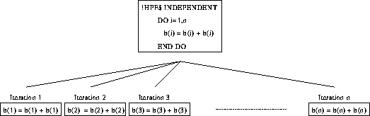

This is independent,
!HPF$ INDEPENDENT
DO i = 1, n
b(i) = b(i) + b(i)
END DO
this is not, (dependence on order of execution),
DO i = 1, n
b(i) = b(i+1) + b(i)
END DO
nor is this,
DO i = 1, n
b(i) = b(i-1) + b(i)
END DO
however, this is
!HPF$ INDEPENDENT
DO i = 1, n
a(i) = b(i-1) + b(i)
END DO
The concept of data dependency is relevant here. We must ask the question: does a later iteration depend on the result of an earlier one? (This is very similar to asking the question: can we perform the iterations in the reverse order?)
The first example clearly has no dependency, the array item b(i) read and written on the same iteration and is not accessed again. This loop is ripe for being denoted as INDEPENDENT.
The second and third loops contain a forward and backward dependency respectively. For the first of these, if the iteration i+1 were performed before iteration i then the value of b(i+1) used to calculate b(i) would be incorrect. The third loop contains a backward reference. If iteration i were performed before iteration i-1 then the value of b(i-1) used to calculate b(i) would be incorrect.
The forth and final loop is INDEPENDENT. None of the values of the array b are updated, so, assuming that b is not storage associated with a or that b and a are not pointers to the same area of memory, the order that the iterations performed in are unimportant.
The value of i will be set at the end of the loop so that it has the same value as it would in an ordinary Fortran 90 program.
Figure 37 illustrates how the compiler views an INDEPENDENT DO loop. The compiler is able to arrange that every iteration of the loop is (conceptually) executed at the same time. The diagram illustrates this by enumerating each iteration and then placing them side by side to denote potential parallelism.

Figure 37: Visualisation of Independent Example 1